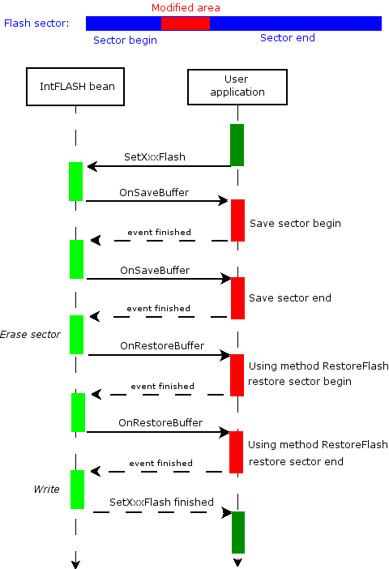

| IntFLASH | |
|
|

In our examples we expect that there is an empty flash sector at 0xE000 address. It is also expected, that affected FLASH memory area is not protected. Please refer to CPU datasheet for details about protection. The user has to properly choose the address in the flash for writing the data and ensure that sector that will be over-written does not contain an application code or data, because the whole sector may be erased and lost. This can be done for example, by decreasing the size of the area where the code is stored by the size of one or more sectors that will be used for user's data. To adjust the allocation sizes, open the build options tab in CPU inspector. Typical usage examples:
(1)
Simple read and write of internal FLASH memory.
Required component settings:
MAIN.C
byte Data;
byte Err;
void main(void)
{
/* Erase whole sector - necessary only if Write mode property is set to "Write" */
Err = IFsh1_EraseSector(0xE000);
/* Write number 28 to address 0xE000 */
Err = IntF1_SetByteFlash(0xE000, 28);
/* Read contents of internal FLASH array on address
0xE000 and write it to variable Data */
Err = IntF1_GetByteFlash(0xE000, &Data);
if(Err != ERR_OK){
/* Handle error - possibly after each method call*/
}
}
Note: Address of FLASH is meant as absolute address, not index in FLASH array.
(2)
Write of multiple bytes to the internal FLASH memory.
Required component settings:
MAIN.C
byte Test_data[] = {0x00,0x0B,0xCC,0x40,0x01,0x40,0x01,0x5B,
0x13,0x79,0x00,0x11,0x50,0x7B,0x01,0x21,
0x5A,0x1C,0x79,0x00,0x39,0xC6,0x81,0x5B,
0x3A,0xC6,0x10,0x7b,0x02,0xF0,0x06,0xC1,
0x1B,0x00};
byte Err;
void main(void)
{
/* Erase whole sector - necessary only if Write mode property is set to "Write" */
Err = IFsh1_EraseSector(0xE000);
/* Write data to addressess starting with 0xE000 */
Err = IntF1_SetBlockFlash(&test_program_data[0],0xE000,sizeof(Test_data));
if(Err != ERR_OK){
/* Handle error - possibly after each method call*/
}
}
Note: Address of FLASH is meant as absolute address, not index in FLASH array.
(3)
If 'Virtual page' property is enabled, methods using virtual page
are available. The following example reads data content of some FLASH area, modifies it,
and stores it in other place in FLASH. Note: return values (error) testing is omited to simplify the example (see example (1) or (2)).
Required component settings:
MAIN.C
void main(void)
{
// Fill virtual page with actual data content of address 0xE000
IntF1_GetPage(0xE000);
// Write number 23 to first cell of page
IntF1_SetBytePage(0, 23);
// Write number 255 to second cell
IntF1_SetBytePage(1, 255);
// Store data content of virtual page to FLASH on address 0xE630
IntF1_SetPage(0xE630);
}
Note: Method SetBytePage/GetBytePage use index 0 to PageSize-1
(4)
If Write method property is set to Safe write and user buffer is selected in Buffer type property,
it is necessary to implement events OnSaveBuffer and OnRestoreBuffer.
These events are called if flash sector erase operation is necessary for writing data into FLASH.
It is expected, that the user code saves/restores sector content during sector-erase operation.
The chart below shows a sequence of program flow during write opration if sector erase operation is required:
In the following example, sector content is copied into RAM LocBuffer variable in OnSaveBuffer event and it is restored in OnRestoreBuffer event. 
Main contains "dummy" code, that causes sector erase. Note: return values (error) testing is omited to simplify the example (see example (1) or (2)).
Required component settings:
EVENTS.C
#define MASK_ADDR_OFFSET (IntF1_AREA_0_SECTOR_SIZE - 1)
static byte LocBuffer[IntF1_AREA_0_SECTOR_SIZE];
void IntF1_OnSaveBuffer(IntF1_TAddress Addr, word Size)
{
byte * Buf = &LocBuffer[Addr & MASK_ADDR_OFFSET];
while (Size--) {
(void)IntF1_GetByteFlash(Addr, Buf);
Addr++;
Buf++;
} /* while Size */
}
void IntF1_OnRestoreBuffer(IntF1_TAddress Addr, word Size)
{
(void)IntF1_RestoreToFlash(Addr, &LocBuffer[Addr & MASK_ADDR_OFFSET], Size);
}
MAIN.C
void main(void)
{
IntF1_SetByteFlash(0xE000, 0); /* clear */
IntF1_SetByteFlash(0xE000, 1); /* sector erase operation will be required */
}
(5)
DataPtr2Addr and FuncPtr2Addr method can be used to convert pointer to data respective pointer to function to an address, that may be passed as a parameter to write methods (SetByteFlash, SetWordFlash, etc.).
Example will demonstrate how to rewrite constant data in the Flash memory. Note: return values (error) testing is omited to simplify the example (see example (1) or (2)).
Required component settings:
MAIN.C
const byte tab []@0xE000={
1,2,3,4,5
};
void main(void)
{
// rewrite first byte of constant variable tab
IFsh1_SetByteFlash(IFsh1_DataPtr2Addr(tab),55);
}